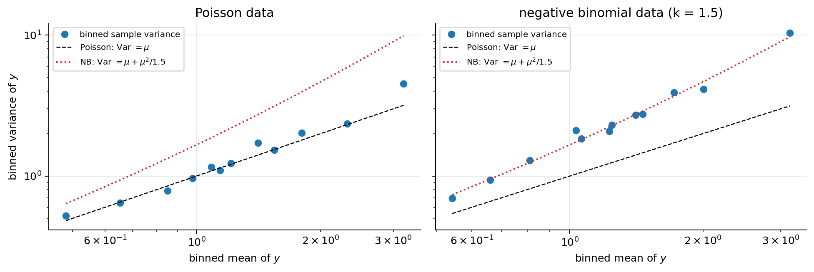
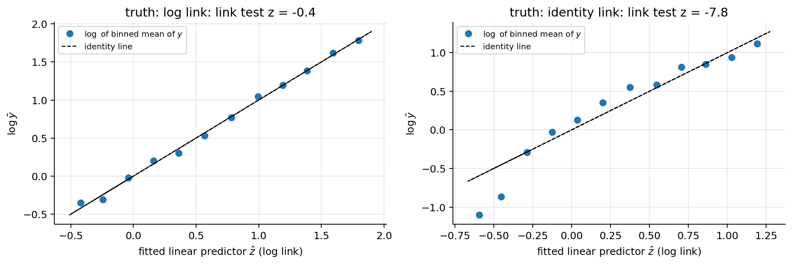
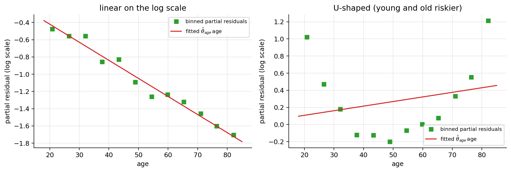
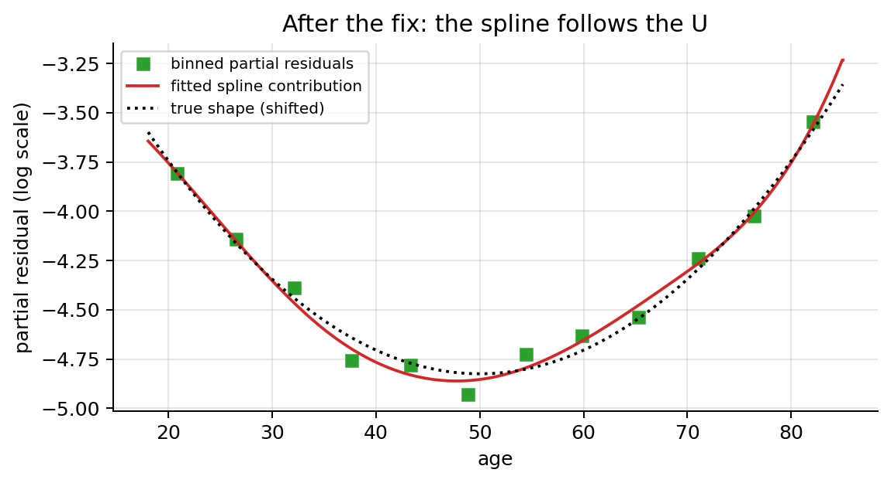
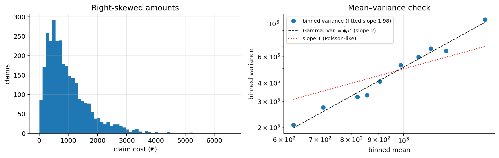

import numpy as np
import matplotlib.pyplot as plt
from scipy import stats, optimize, special
plt.rcParams.update({"figure.dpi": 90, "axes.grid": True, "grid.alpha": 0.3,
"axes.spines.top": False, "axes.spines.right": False})
rng = np.random.default_rng(7)02b · Generalised Linear Models (GLMs)
Notes 01 and 02 look different (a line vs. an S-curve, MSE vs. cross-entropy), but they are the same recipe with one ingredient swapped. This note names that recipe and uses it to build the models an insurer actually prices with: Poisson regression for claim counts (e.g. number of claims per policy), negative binomial regression when the counts vary more than Poisson allows, Gamma regression for claim amounts and Tweedie regression for the total cost per policy.
What this note covers. The three ingredients of a GLM, the loss (minus the log-likelihood), the gradient and the convexity proof for all canonical GLMs at once; the exponential family, which explains where the variance and the “canonical” link come from; Fisher scoring (IRLS) for any link, standard errors and the dispersion parameter; the deviance and the residuals. Then the assumptions of a GLM, how to check them and what to do when they fail (section 13), and the practical situations of count and cost data: overdispersion, exposure and offsets, excess zeros, claim severity and pure premium (sections 14 to 16).
What you need. Note 01 (linear regression, least squares = maximum likelihood with Gaussian noise, the normal equation, weighted least squares) and note 02 (logistic regression, the Bernoulli likelihood, Newton’s method / IRLS, Wald standard errors). From probability: expectation and variance, the law of total variance, the Poisson and Gamma distributions (both are introduced below).
After this note you can choose the distribution and the link for a new kind of target, fit any GLM with a dozen lines of numpy, read its coefficients as rate ratios with confidence intervals, check whether the variance, the link and the linear predictor are right, and handle overdispersed counts, varying exposure, excess zeros, skewed claim amounts and pure premiums.
Notation. As in the other notes: \(m\) examples \((\mathbf{x}^{(i)}, y^{(i)})\), \(n\) features, \(\mathbf{x}^{(i)}\in\mathbb{R}^{n+1}\) with \(x_0 = 1\), design matrix \(\mathbf{X}\), parameters \(\boldsymbol{\theta}\) (\(\theta_0\) the intercept). The linear score is \(z = \boldsymbol{\theta}^\top\mathbf{x}\) (the GLM literature calls it the linear predictor \(\eta\)), the mean of \(y\) is \(\mu\), and \(q = n+1\) is the number of parameters. Softmax regression (note 04) is one more member of the family.
1. Side by side
| Linear regression (01) | Logistic regression (02) | |
|---|---|---|
| target \(y\) | any real number | 0 or 1 |
| linear score | \(z = \boldsymbol{\theta}^\top\mathbf{x}\) | \(z = \boldsymbol{\theta}^\top\mathbf{x}\) |
| prediction \(h_{\boldsymbol{\theta}}(\mathbf{x})\) | \(z\) | \(\sigma(z)\) |
| what the prediction means | mean of \(y\) | \(P(y=1)\) = mean of \(y\) |
| noise model | Gaussian | Bernoulli |
| loss | MSE = \(-\log\) Gaussian likelihood | cross-entropy = \(-\log\) Bernoulli likelihood |
| gradient | \(\frac1m\mathbf{X}^\top(h - \mathbf{y})\) | \(\frac1m\mathbf{X}^\top(h - \mathbf{y})\) |
Three things stayed the same: - a linear score \(z = \boldsymbol{\theta}^\top\mathbf{x}\), - the prediction is the mean of \(y\) (for 0/1 labels the mean is \(P(y=1)\), since \(\mathbb{E}[y] = 1\cdot P(y=1) + 0\cdot P(y=0)\)), - the gradient has the form (prediction − target) × input.
Two things changed, and they always change together: - the distribution of \(y\) (Gaussian → Bernoulli), - the function that turns \(z\) into a prediction (identity → sigmoid).
2. The recipe: three ingredients
A GLM is specified by answering three questions.
- What kind of number is \(y\)? Pick a distribution for \(y\) given \(\mathbf{x}\) that produces that kind of number, with mean \(\mu\).
- real numbers → Gaussian
- 0/1 → Bernoulli
- counts \(0, 1, 2, \dots\) → Poisson
- positive amounts → Gamma (section 15)
- Linear score. \(z = \boldsymbol{\theta}^\top\mathbf{x}\) (always the same).
- Link. Connect the two: \(\mu = g^{-1}(z)\), where \(g^{-1}\) maps any real number into the allowed range of \(\mu\). (\(g\) itself is called the link function; \(g^{-1}\) is the inverse link, the one we actually compute with.)
| model | \(y\) | distribution | allowed \(\mu\) | prediction \(\mu = g^{-1}(z)\) | link \(g(\mu) = z\) |
|---|---|---|---|---|---|
| linear regression | real | Gaussian | \((-\infty, \infty)\) | \(z\) | identity: \(\mu\) |
| logistic regression | 0/1 | Bernoulli | \((0, 1)\) | \(\sigma(z) = \frac{1}{1+e^{-z}}\) | logit: \(\log\frac{\mu}{1-\mu}\) |
| Poisson regression | count | Poisson | \((0, \infty)\) | \(e^{z}\) | log: \(\log\mu\) |
| Gamma regression | amount \(> 0\) | Gamma | \((0, \infty)\) | \(e^{z}\) | log: \(\log\mu\) |
That’s all a GLM is: a linear score, pushed through a function so it lands in the right range, used as the mean of the right distribution.
3. Why we need a link
The linear score \(z\) can be any real number. The mean \(\mu\) often cannot: - a probability must be in \((0,1)\), - an expected number of claims must be \(> 0\).
The inverse link squashes or stretches \(\mathbb{R}\) onto exactly the allowed range, so the model can never predict something impossible, no matter what \(\mathbf{x}\) is.
z = np.linspace(-4, 4, 300)
fig, axes = plt.subplots(1, 3, figsize=(13, 3.3))
for ax, f, name, rng_txt in [(axes[0], z, r"identity: $\mu = z$", "any real number"),
(axes[1], 1 / (1 + np.exp(-z)), r"sigmoid: $\mu = \sigma(z)$", "between 0 and 1"),
(axes[2], np.exp(z), r"exp: $\mu = e^z$", "always positive")]:
ax.plot(z, f, lw=2); ax.axhline(0, color="k", lw=0.8)
ax.set_title(f"{name}\n$\\mu$ is {rng_txt}"); ax.set_xlabel(r"linear score $z=\theta^\top x$"); ax.set_ylabel(r"$\mu$")
axes[1].axhline(1, color="k", lw=0.8, ls="--"); axes[2].set_ylim(-1, 10)
plt.tight_layout(); plt.show()
4. The loss is always minus the log-likelihood
Same rule as in notes 01 and 02: write the probability of each observed \(y\) under the model, take \(-\log\), average. Per example, with \(\mu = g^{-1}(\boldsymbol{\theta}^\top\mathbf{x})\):
| distribution | \(P(y \mid \mu)\) | per-example loss \(\ell = -\log P\) (dropping constants) |
|---|---|---|
| Gaussian (\(\sigma = 1\)) | \(\frac{1}{\sqrt{2\pi}}e^{-(y-\mu)^2/2}\) | \(\frac12(\mu - y)^2\) → MSE |
| Bernoulli | \(\mu^y(1-\mu)^{1-y}\) | \(-y\log\mu - (1-y)\log(1-\mu)\) → cross-entropy |
| Poisson | \(\frac{\mu^y e^{-\mu}}{y!}\) | \(\mu - y\log\mu\) → Poisson loss |
“Dropping constants” means dropping terms that don’t depend on \(\boldsymbol{\theta}\) (like \(\log\sqrt{2\pi}\) or \(\log y!\)), which don’t move the minimum. (For the Poisson row: \(-\log\frac{\mu^y e^{-\mu}}{y!} = -y\log\mu + \mu + \log y!\).)
The Poisson distribution in one line: if events happen independently at an average rate of \(\mu\) per period, the number \(y\) that happens in one period has \(P(y) = \mu^y e^{-\mu}/y!\). Its mean is \(\mu\) and, notably, its variance is also \(\mu\): the more claims you expect, the more the actual count varies. (Both facts follow from section 7.)
from scipy.stats import poisson
fig, ax = plt.subplots(figsize=(7, 3.2))
k = np.arange(0, 12)
for i, mu in enumerate([0.5, 2, 5]):
ax.bar(k + (i - 1) * 0.27, poisson.pmf(k, mu), width=0.27, label=rf"$\mu={mu}$")
ax.set_xlabel("count $y$"); ax.set_ylabel("$P(y)$"); ax.set_xticks(k); ax.legend()
ax.set_title("Poisson distribution: mean $\\mu$, and the spread grows with $\\mu$")
plt.tight_layout(); plt.show()
5. The gradient is always (prediction − target) × input
Write \(z = \boldsymbol{\theta}^\top\mathbf{x}\) and use the chain rule \(\frac{\partial\ell}{\partial\theta_j} = \frac{\partial\ell}{\partial z}\cdot\frac{\partial z}{\partial\theta_j} = \frac{\partial\ell}{\partial z}\cdot x_j\). So we only need \(\partial\ell/\partial z\) for each model. Put \(\mu\) in terms of \(z\) first:
Gaussian. \(\mu = z\), \(\;\ell = \frac12(z - y)^2\), \(\;\frac{\partial\ell}{\partial z} = z - y = \mu - y\).
Bernoulli. \(\mu = \sigma(z)\). Shown in note 02, section 6: the factor \(\sigma'(z) = \mu(1-\mu)\) cancels the denominator of \(\frac{\partial\ell}{\partial\mu} = \frac{\mu - y}{\mu(1-\mu)}\), so \(\;\frac{\partial\ell}{\partial z} = \mu - y\).
Poisson. \(\mu = e^z\), so \(\log\mu = z\) and \(\;\ell = e^z - y\,z\), \(\;\frac{\partial\ell}{\partial z} = e^z - y = \mu - y\).
In all three cases:
\[ \boxed{\frac{\partial\ell}{\partial z} = \mu - y \qquad\Longrightarrow\qquad \nabla_{\boldsymbol{\theta}} J = \frac{1}{m}\sum_{i=1}^m \big(\mu^{(i)} - y^{(i)}\big)\,\mathbf{x}^{(i)} = \frac1m \mathbf{X}^\top(\boldsymbol{\mu} - \mathbf{y})} \]
Why does it come out so clean? Because we paired each distribution with its “natural” link (the canonical link): identity for Gaussian, logit for Bernoulli, log for Poisson. With these pairs, the derivative of the link and the derivative of the log-likelihood cancel each other out (section 7 shows why). Other pairings are allowed, e.g. a log link with a Gamma distribution for claim amounts, but the gradient gets an extra factor (section 11).
6. One proof for all: convexity
All three losses can be written in the same shape. With \(z = \boldsymbol{\theta}^\top\mathbf{x}\):
\[ \ell(z) = A(z) - y\,z, \qquad \begin{array}{c|c|c|c} & A(z) & A'(z) = \mu & A''(z) \\\hline \text{Gaussian} & \tfrac12 z^2 & z & 1 \\ \text{Bernoulli} & \log(1 + e^{z}) & \sigma(z) & \mu(1-\mu) \\ \text{Poisson} & e^{z} & e^{z} & \mu \end{array} \]
(Check Gaussian: \(\frac12 z^2 - yz = \frac12(z-y)^2 - \frac12y^2\), the MSE up to a constant. Check Bernoulli: \(\log(1+e^z) - yz\) is exactly the cross-entropy written in terms of \(z\): for \(y=1\) it is \(\log(1+e^{z}) - z = \log(1+e^{-z}) = -\log\sigma(z)\), for \(y=0\) it is \(\log(1+e^{z}) = -\log(1-\sigma(z))\).)
Two facts fall out immediately:
- Gradient. \(\ell'(z) = A'(z) - y = \mu - y\) (section 5 again, in one line).
- Curvature. \(\ell''(z) = A''(z)\), and in every row \(A''(z) \ge 0\). It is, in fact, the variance of \(y\): \(1\) for the Gaussian (we set \(\sigma=1\)), \(\mu(1-\mu)\) for Bernoulli, \(\mu\) for Poisson (proved in section 7). A variance can’t be negative.
Going from \(z\) to \(\boldsymbol{\theta}\) (same step as notes 01 and 02):
\[ \nabla^2 J(\boldsymbol{\theta}) = \frac1m\sum_{i=1}^m A''(z^{(i)})\,\mathbf{x}^{(i)}\mathbf{x}^{(i)\top}, \qquad \mathbf{v}^\top\nabla^2 J\,\mathbf{v} = \frac1m\sum_{i=1}^m \underbrace{A''(z^{(i)})}_{\ge 0}\big(\mathbf{v}^\top\mathbf{x}^{(i)}\big)^2 \ge 0 . \]
So every GLM with its canonical link has a convex loss: any point with zero gradient is a global minimum, and gradient descent can’t get stuck. \(\blacksquare\)
The one-parameter picture from note 01’s warm-up still holds: \(\ell(z)\) is a bowl in \(z\), with the bottom where \(\mu = y\).
z = np.linspace(-4, 4, 300)
losses = [("Gaussian, $y=1.5$", 0.5 * z**2 - 1.5 * z),
("Bernoulli, $y=1$", np.log1p(np.exp(z)) - 1 * z),
("Poisson, $y=3$", np.exp(z) - 3 * z)]
fig, axes = plt.subplots(1, 3, figsize=(13, 3.2))
for ax, (name, l) in zip(axes, losses):
ax.plot(z, l, lw=2); ax.set_title(name + r": $\ell(z)=A(z)-yz$"); ax.set_xlabel("$z$")
axes[0].axvline(1.5, color="C3", ls="--", lw=1, label=r"minimum: $\mu=z=y$"); axes[0].legend()
axes[2].axvline(np.log(3), color="C3", ls="--", lw=1, label=r"minimum: $\mu=e^z=y$"); axes[2].legend()
axes[1].text(0, 3.2, "decreasing forever:\n$\\mu=\\sigma(z)$ never reaches 1\n(= separable data, note 02)", ha="center")
axes[2].set_ylim(-3, 15)
plt.tight_layout(); plt.show()
7. The exponential family: where the variance and the canonical link come from
The three distributions share a form. A distribution belongs to the exponential family (with dispersion) if its density or probability can be written as
\[ p(y;\,\vartheta,\phi) = \exp\Big(\frac{y\,\vartheta - A(\vartheta)}{\phi} + c(y,\phi)\Big), \]
with a natural parameter \(\vartheta\), a dispersion \(\phi > 0\), the function \(A\) of section 6 and a normaliser \(c\) that does not involve \(\vartheta\). Examples:
| distribution | rewrite of \(\log p(y)\) | \(\vartheta\) | \(A(\vartheta)\) | \(\phi\) |
|---|---|---|---|---|
| Gaussian\((\mu,\sigma^2)\) | \(\frac{y\mu - \mu^2/2}{\sigma^2} - \frac{y^2}{2\sigma^2} - \frac12\log(2\pi\sigma^2)\) | \(\mu\) | \(\vartheta^2/2\) | \(\sigma^2\) |
| Bernoulli\((\mu)\) | \(y\log\frac{\mu}{1-\mu} + \log(1-\mu)\) | \(\log\frac{\mu}{1-\mu}\) | \(\log(1+e^\vartheta)\) | 1 |
| Poisson\((\mu)\) | \(y\log\mu - \mu - \log y!\) | \(\log\mu\) | \(e^\vartheta\) | 1 |
| Gamma(mean \(\mu\), shape \(k\)) | \(\frac{y(-1/\mu) - \log\mu}{1/k} + (k-1)\log y + k\log k - \log\Gamma(k)\) | \(-1/\mu\) | \(-\log(-\vartheta)\) | \(1/k\) |
(For the Bernoulli row: \(\mu^y(1-\mu)^{1-y}\) has logarithm \(y\log\mu + (1-y)\log(1-\mu) = y\log\frac{\mu}{1-\mu} + \log(1-\mu)\), and \(\log(1-\mu) = -\log(1+e^{\vartheta})\) when \(\vartheta = \operatorname{logit}\mu\). For the Gamma row, the density \(\frac{1}{\Gamma(k)}\big(\frac{k}{\mu}\big)^k y^{k-1}e^{-ky/\mu}\) has logarithm \(k\big(-\frac{y}{\mu} - \log\mu\big) + (k-1)\log y + k\log k - \log\Gamma(k)\); and \(A(\vartheta) = -\log(-\vartheta) = \log\mu\).)
Mean and variance from \(A\). The probabilities sum (or integrate) to 1 for every \(\vartheta\): \(\int p(y;\vartheta,\phi)\,dy = 1\). Differentiate this identity with respect to \(\vartheta\), twice:
\[ \begin{aligned} 0 &= \int \frac{y - A'(\vartheta)}{\phi}\,p(y)\,dy && \text{(derivative of the exponent is } (y - A'(\vartheta))/\phi\text{)}\\ \Rightarrow\ \mathbb{E}[y] &= A'(\vartheta) = \mu && \text{(multiply by } \phi\text{; } \textstyle\int p = 1\text{)}\\ 0 &= \int\Big[-\frac{A''(\vartheta)}{\phi} + \frac{(y - A'(\vartheta))^2}{\phi^2}\Big]p(y)\,dy && \text{(differentiate again: product rule)}\\ \Rightarrow\ \mathrm{Var}(y) &= \mathbb{E}\big[(y-\mu)^2\big] = \phi\,A''(\vartheta) && \text{(multiply by } \phi^2\text{)} \end{aligned} \]
Since \(\mu = A'(\vartheta)\) is increasing (\(A'' > 0\)), \(\vartheta\) is a function of \(\mu\), and so is \(A''(\vartheta)\). That function is the variance function \(V(\mu)\):
\[ \boxed{\mathrm{Var}(y\mid\mathbf{x}) = \phi\,V(\mu)}\qquad V(\mu) = \begin{cases}1 & \text{Gaussian}\\ \mu(1-\mu) & \text{Bernoulli}\\ \mu & \text{Poisson}\\ \mu^2 & \text{Gamma}\\ \mu^p,\ 1<p<2 & \text{Tweedie (section 16)}\end{cases} \]
(Poisson: \(A'' = e^\vartheta = \mu\). Gamma: \(A'(\vartheta) = -1/\vartheta = \mu\) and \(A''(\vartheta) = 1/\vartheta^2 = \mu^2\), so \(\mathrm{Var} = \mu^2/k\): a constant coefficient of variation \(1/\sqrt{k}\).) The mean–variance relationship is what a GLM really assumes about the noise (section 13.1).
The canonical link. Choosing the link \(g\) so that the natural parameter is the linear score, \(\vartheta = \boldsymbol{\theta}^\top\mathbf{x}\), gives \(g = (A')^{-1}\): identity for Gaussian, logit for Bernoulli, log for Poisson, \(-1/\mu\) for Gamma. The log-likelihood is then \(\sum_i \frac{y_i z_i - A(z_i)}{\phi}\), which is exactly section 6’s \(\ell(z) = A(z) - yz\) (up to the sign and \(\phi\)). That is why the canonical links make the gradient clean and the loss convex. For the Gamma distribution the canonical link \(-1/\mu\) does not keep \(\mu\) positive, so in practice the log link is used (section 15).
8. One gradient-descent function fits all three models
Since the gradient is always \(\frac1m\mathbf{X}^\top(\boldsymbol{\mu} - \mathbf{y})\), a GLM fitter only needs to know the inverse link. Everything else is identical.
inverse_links = {
"gaussian (linear)": lambda z: z,
"bernoulli (logistic)": lambda z: 1 / (1 + np.exp(-z)),
"poisson": lambda z: np.exp(z),
}
def fit_glm(X, y, inv_link, alpha=0.1, n_iters=5000):
theta = np.zeros(X.shape[1])
for _ in range(n_iters):
mu = inv_link(X @ theta) # prediction = mean of y
theta -= alpha * X.T @ (mu - y) / len(y) # (prediction - target) x input
return theta
# Same x, three kinds of target, all generated from z = 0.5 + 1.0 x
m = 2000
x = rng.normal(0, 1, m)
X = np.c_[np.ones(m), x]
z_true = 0.5 + 1.0 * x
targets = {
"gaussian (linear)": z_true + rng.normal(0, 1, m),
"bernoulli (logistic)": rng.binomial(1, 1 / (1 + np.exp(-z_true))),
"poisson": rng.poisson(np.exp(z_true)),
}
from sklearn.linear_model import LinearRegression, LogisticRegression, PoissonRegressor
sk_models = {"gaussian (linear)": LinearRegression(),
"bernoulli (logistic)": LogisticRegression(C=1e10),
"poisson": PoissonRegressor(alpha=0, max_iter=1000)}
print(f"{'model':>22} | {'true theta':>12} | {'our fit_glm':>14} | {'sklearn':>14}")
fig, axes = plt.subplots(1, 3, figsize=(14, 3.6))
g = np.linspace(-3, 3, 200)
for ax, (name, y) in zip(axes, targets.items()):
th = fit_glm(X, y, inverse_links[name])
sk = sk_models[name].fit(x[:, None], y)
sk_th = np.r_[np.ravel(sk.intercept_), np.ravel(sk.coef_)]
print(f"{name:>22} | {'[0.5, 1.0]':>12} | {str(th.round(3)):>14} | {str(sk_th.round(3)):>14}")
ax.scatter(x, y + (rng.normal(0, 0.05, m) if name != "gaussian (linear)" else 0), s=3, alpha=0.25, color="k")
ax.plot(g, inverse_links[name](th[0] + th[1] * g), "C3", lw=2.5, label=r"fitted mean $\mu(x)$")
ax.set_title(name); ax.set_xlabel("$x$"); ax.legend(loc="upper left")
axes[0].set_ylabel("$y$"); axes[2].set_ylim(-0.5, 20)
plt.tight_layout(); plt.show() model | true theta | our fit_glm | sklearn
gaussian (linear) | [0.5, 1.0] | [0.505 1.008] | [0.505 1.008]
bernoulli (logistic) | [0.5, 1.0] | [0.508 0.988] | [0.508 0.988]
poisson | [0.5, 1.0] | [0.533 0.996] | [0.533 0.996]
The same six lines of fit_glm recover the true parameters in all three cases and agree with scikit-learn. The only thing that changed between models is one function.
(For the Poisson model we kept \(\alpha\) small: because \(e^z\) grows fast, a large step can overshoot badly. Standardising the features helps, exactly as in note 01.)
9. Worked example: Poisson regression for claim counts
Problem. For each policyholder we know their age and the number of claims they made over the last 5 years (\(y = 0, 1, 2, \dots\)). We want the expected number of claims as a function of age, e.g. to price the policy. (The data below is synthetic.)
Why not linear regression? - A straight line can predict a negative number of claims. - Effects on counts are naturally multiplicative (“10 more years of age → 40 % fewer claims”), not additive (“→ 0.3 fewer claims”, which is huge for a low-risk group and tiny for a high-risk one). - The noise is not constant: counts vary more where the mean is larger (Poisson variance \(= \mu\)).
Poisson regression answers all three: \(\mu = e^{\theta_0 + \theta_1\,\text{age}}\) is always positive, and \(\theta_1\) acts multiplicatively (section 10).
m = 3000
age = rng.uniform(18, 80, m)
mu_true = np.exp(0.8 - 0.05 * (age - 18)) # young drivers: ~2.2 claims in 5 years; 80-year-olds: ~0.1
claims = rng.poisson(mu_true)
# standardise age for gradient descent, then convert the slope back to "per year"
a_mean, a_sd = age.mean(), age.std()
Xa = np.c_[np.ones(m), (age - a_mean) / a_sd]
th = fit_glm(Xa, claims, inverse_links["poisson"], alpha=0.1, n_iters=5000)
slope_per_year = th[1] / a_sd
intercept_age0 = th[0] - th[1] * a_mean / a_sd # so that mu = exp(intercept_age0 + slope_per_year * age)
print(f"slope per year of age: {slope_per_year:.4f} (true: -0.05)")
lin = LinearRegression().fit(age[:, None], claims)
g = np.linspace(18, 95, 300)
bins = np.arange(18, 81, 4); centers = (bins[:-1] + bins[1:]) / 2
bin_means = [claims[(age >= lo) & (age < hi)].mean() for lo, hi in zip(bins[:-1], bins[1:])]
fig, ax = plt.subplots(figsize=(8, 4))
ax.scatter(age, claims + rng.uniform(-0.15, 0.15, m), s=3, alpha=0.2, color="k", label="policyholders (jittered)")
ax.plot(centers, bin_means, "s", color="C2", ms=6, label="average claims per 4-year age band")
ax.plot(g, np.exp(intercept_age0 + slope_per_year * g), "C3", lw=2.5, label="Poisson regression")
ax.plot(g, lin.intercept_ + lin.coef_[0] * g, "C0", lw=2, ls="--", label="linear regression")
ax.axhline(0, color="k", lw=0.8); ax.axvspan(80, 95, color="gray", alpha=0.1)
ax.text(87.5, 3.5, "no data here\n(extrapolation)", ha="center", fontsize=9)
ax.set_xlabel("age"); ax.set_ylabel("claims in 5 years"); ax.set_ylim(-0.8, 6); ax.legend(loc="upper right", fontsize=8)
ax.set_title("Claim counts: the line misses the curve and goes negative; Poisson stays positive")
plt.tight_layout(); plt.show()
print(f"prediction at age 90: linear = {lin.predict([[90]])[0]:+.2f} claims Poisson = {np.exp(intercept_age0 + slope_per_year * 90):.2f} claims")slope per year of age: -0.0491 (true: -0.05)
prediction at age 90: linear = -0.52 claims Poisson = 0.06 claims(Here every policyholder was observed for the same 5 years. When observation periods differ, the model needs an exposure offset: section 14.2.)
10. Interpreting the coefficients
The link decides how a coefficient acts. Increase \(x_j\) by one unit, others fixed: the score \(z\) goes up by \(\theta_j\). What happens to the prediction?
| model | link | \(+1\) in \(x_j\) does this to the prediction | name |
|---|---|---|---|
| linear | identity | adds \(\theta_j\) to \(\mu\) | slope |
| logistic | logit | multiplies the odds \(\frac{\mu}{1-\mu}\) by \(e^{\theta_j}\) | odds ratio |
| Poisson, Gamma, Tweedie | log | multiplies \(\mu\) by \(e^{\theta_j}\) | rate ratio (relativity) |
Proof for the log link: \(\mu(x_j + 1) = e^{\dots + \theta_j(x_j + 1)} = e^{\dots + \theta_j x_j}\cdot e^{\theta_j} = \mu(x_j)\cdot e^{\theta_j}\).
With several features, the log link makes the prediction a product of factors, \(\mu = e^{\theta_0}\cdot e^{\theta_1x_1}\cdots e^{\theta_nx_n}\): a base rate times one multiplicative “relativity” per rating factor, which is exactly how insurance tariffs are written. For the claims example:
print(f"theta_age = {slope_per_year:.4f} per year")
print(f" +1 year of age -> expected claims x {np.exp(slope_per_year):.3f} ({100 * (np.exp(slope_per_year) - 1):+.1f} %)")
print(f" +10 years of age -> expected claims x {np.exp(10 * slope_per_year):.3f} ({100 * (np.exp(10 * slope_per_year) - 1):+.1f} %)")
print(f" e.g. age 25 -> 35: {np.exp(intercept_age0 + slope_per_year * 25):.2f} -> {np.exp(intercept_age0 + slope_per_year * 35):.2f} claims")
print(f" age 60 -> 70: {np.exp(intercept_age0 + slope_per_year * 60):.2f} -> {np.exp(intercept_age0 + slope_per_year * 70):.2f} claims (same % drop, smaller absolute drop)")theta_age = -0.0491 per year
+1 year of age -> expected claims x 0.952 (-4.8 %)
+10 years of age -> expected claims x 0.612 (-38.8 %)
e.g. age 25 -> 35: 1.57 -> 0.96 claims
age 60 -> 70: 0.28 -> 0.17 claims (same % drop, smaller absolute drop)Section 11 adds confidence intervals to these rate ratios.
11. Any link, any family: IRLS, standard errors and the dispersion
The score for a general link. Take one observation of an exponential-family distribution (section 7) with link \(g(\mu) = z = \boldsymbol{\theta}^\top\mathbf{x}\), which need not be canonical. Its log-likelihood is \(\frac{y\vartheta - A(\vartheta)}{\phi} + c\), and \(\vartheta\) depends on \(\boldsymbol{\theta}\) through the chain \(\boldsymbol{\theta}\to z\to\mu\to\vartheta\):
\[ \begin{aligned} \frac{\partial\log p}{\partial\vartheta} &= \frac{y - A'(\vartheta)}{\phi} = \frac{y-\mu}{\phi} && \text{(section 7: } A'(\vartheta) = \mu\text{)}\\ \frac{d\vartheta}{d\mu} &= \frac{1}{d\mu/d\vartheta} = \frac{1}{A''(\vartheta)} = \frac{1}{V(\mu)} && \text{(inverse function; } \mu = A'(\vartheta)\text{)}\\ \frac{d\mu}{dz} &= \frac{1}{g'(\mu)} && \text{(inverse of the link)}\\ \frac{\partial\log p}{\partial\theta_j} &= \frac{y-\mu}{\phi\,V(\mu)\,g'(\mu)}\;x_j && \text{(chain rule, } \partial z/\partial\theta_j = x_j\text{)} \end{aligned} \]
For the canonical link, \(g = (A')^{-1}\) has \(g'(\mu) = 1/V(\mu)\) and the factor becomes \((y-\mu)/\phi\): section 5 again. For any other link the residual is divided by \(V(\mu)\,g'(\mu)\). Example: Gamma with log link has \(V = \mu^2\) and \(g'(\mu) = 1/\mu\), so the score is \(\frac{(y-\mu)}{\phi\,\mu}\,x_j\): a relative residual.
Fisher information and IRLS. The expected second derivative (Fisher scoring uses the expected rather than the observed Hessian, which may not be positive definite for non-canonical links) is
\[ \mathcal{I}(\boldsymbol{\theta}) = \frac{1}{\phi}\,\mathbf{X}^\top\mathbf{W}\mathbf{X},\qquad \mathbf{W} = \mathrm{diag}\Big(\frac{1}{V(\mu_i)\,g'(\mu_i)^2}\Big), \]
(the variance of the score of one observation is \(\mathrm{Var}(y)\,x_jx_k/(\phi V g')^2 = x_jx_k/(\phi V g'^2)\), and for a likelihood the expected negative Hessian equals the variance of the score). Exactly as in note 02, section 9, the Fisher-scoring step \(\boldsymbol{\theta}_{\text{new}} = \boldsymbol{\theta} + \mathcal{I}^{-1}\nabla\ell\) can be rewritten as a weighted least-squares fit,
\[ \boldsymbol{\theta}_{\text{new}} = (\mathbf{X}^\top\mathbf{W}\mathbf{X})^{-1}\mathbf{X}^\top\mathbf{W}\mathbf{z}_w,\qquad z_{w,i} = z_i + (y_i - \mu_i)\,g'(\mu_i)\quad\text{(working response)}, \]
(check: \(\mathbf{X}^\top\mathbf{W}(\mathbf{z}_w - \mathbf{X}\boldsymbol{\theta})\) has entries \(\sum_i W_i(y_i - \mu_i)g'(\mu_i)x_{ij} = \sum_i\frac{(y_i-\mu_i)x_{ij}}{V(\mu_i)g'(\mu_i)} = \phi\,\partial\ell/\partial\theta_j\)). \(\phi\) cancels, so \(\hat{\boldsymbol{\theta}}\) does not depend on the dispersion. For the log link, \(g'(\mu) = 1/\mu\), so \(W_i = \mu_i^2/V(\mu_i)\): \(\mu_i\) for Poisson, \(1\) for Gamma.
Standard errors and the dispersion. As in note 02, section 11, \(\hat{\boldsymbol{\theta}}\approx\mathcal{N}\big(\boldsymbol{\theta},\ \phi\,(\mathbf{X}^\top\mathbf{W}\mathbf{X})^{-1}\big)\). For Poisson and Bernoulli \(\phi = 1\). When \(\phi\) is unknown (Gaussian, Gamma, or a Poisson model whose variance is off, section 14.1) it is estimated from the Pearson residuals \(r_{P,i} = \frac{y_i - \hat\mu_i}{\sqrt{V(\hat\mu_i)}}\), which have variance \(\phi\) under the model:
\[ \hat\phi = \frac{1}{m-q}\sum_{i=1}^m r_{P,i}^2 = \frac{1}{m-q}\sum_{i=1}^m\frac{(y_i - \hat\mu_i)^2}{V(\hat\mu_i)}, \]
dividing by \(m - q\) rather than \(m\) for the \(q\) fitted parameters, as for \(\hat\sigma^2\) in linear regression. Rate ratios with confidence intervals: \(e^{\hat\theta_j}\) with 95 % CI \(\big[e^{\hat\theta_j - 1.96\,\mathrm{SE}_j},\ e^{\hat\theta_j + 1.96\,\mathrm{SE}_j}\big]\).
The function below implements IRLS for the log link (and the identity link, used in section 13.2), with an optional offset (section 14.2) and case weights. It is used for the rest of the note.
def irls(X, y, V=lambda mu: mu, link="log", offset=None, w=None, n_iter=100, tol=1e-10):
"""GLM by IRLS / Fisher scoring. V: variance function (default Poisson). link: 'log' or 'identity'.
Returns theta, (X^T W X)^{-1} (multiply by phi for the covariance) and the fitted means."""
m_ = len(y); off = np.zeros(m_) if offset is None else offset; w = np.ones(m_) if w is None else w
theta = np.zeros(X.shape[1])
theta[0] = np.log(np.sum(w * y) / np.sum(w * np.exp(off))) if link == "log" else np.average(y, weights=w) # start at the mean
for _ in range(n_iter):
z_ = X @ theta + off
mu_, dmu = (np.exp(z_), np.exp(z_)) if link == "log" else (z_, np.ones(m_)) # mu and d mu / d z
W = w * dmu ** 2 / V(mu_) # 1 / (V g'^2), times case weights
zw = z_ - off + (y - mu_) / dmu # working response
new = np.linalg.solve(X.T @ (W[:, None] * X), X.T @ (W * zw))
done = np.abs(new - theta).max() < tol; theta = new
if done: break
z_ = X @ theta + off; mu_, dmu = (np.exp(z_), np.exp(z_)) if link == "log" else (z_, np.ones(m_))
return theta, np.linalg.inv(X.T @ ((w * dmu ** 2 / V(mu_))[:, None] * X)), mu_
def pearson_phi(y, mu, V, q, w=None):
w = np.ones(len(y)) if w is None else w
return np.sum(w * (y - mu) ** 2 / V(mu)) / (len(y) - q)
X_age = np.c_[np.ones(m), age]
th_age, XWX_inv, mu_age = irls(X_age, claims)
phi_age = pearson_phi(claims, mu_age, lambda u: u, 2)
se_age = np.sqrt(np.diag(XWX_inv)) # phi = 1 for Poisson
sk_age = PoissonRegressor(alpha=0, max_iter=1000).fit(age[:, None], claims)
print(f"IRLS: theta = {th_age.round(5)}; gradient descent: [{intercept_age0:.5f} {slope_per_year:.5f}]; sklearn: [{sk_age.intercept_:.5f} {sk_age.coef_[0]:.5f}]")
print(f"SE = {se_age.round(5)}; Pearson dispersion phi_hat = {phi_age:.3f} (Poisson says 1)")
lo, hi = th_age[1] - 1.96 * se_age[1], th_age[1] + 1.96 * se_age[1]
print(f"rate ratio per 10 years of age: {np.exp(10 * th_age[1]):.3f}, 95% CI [{np.exp(10 * lo):.3f}, {np.exp(10 * hi):.3f}]")IRLS: theta = [ 1.68064 -0.04909]; gradient descent: [1.68064 -0.04909]; sklearn: [1.68064 -0.04909]
SE = [0.05766 0.00151]; Pearson dispersion phi_hat = 1.013 (Poisson says 1)
rate ratio per 10 years of age: 0.612, 95% CI [0.594, 0.630]Three fits, one answer. The Pearson dispersion is close to 1, as it should be for data that really are Poisson. Every 10 years of age multiply the expected number of claims by the printed rate ratio (the truth is \(e^{-0.5} = 0.607\)), with a narrow interval because there are 3,000 policyholders.
12. Deviance and residuals
The deviance compares the fitted model with the saturated model, which has one free mean per observation and therefore fits every \(y_i\) exactly (\(\mu_i = y_i\)). With \(\ell\) the log-likelihood,
\[ D = 2\phi\,\big[\ell(\text{saturated}) - \ell(\hat{\boldsymbol{\mu}})\big] = \sum_{i=1}^m d_i \;\ge 0 , \]
where \(d_i\) is observation \(i\)’s contribution (the factor \(\phi\) makes \(D\) free of the dispersion; \(D/\phi\) is the scaled deviance). It is the GLM generalisation of the residual sum of squares. Derivations, per observation:
- Gaussian (\(\phi = \sigma^2\)): \(\ell_i = -\frac{(y_i-\mu_i)^2}{2\sigma^2} + \text{const}\), and the saturated term is the constant alone, so \(d_i = 2\sigma^2\cdot\frac{(y_i-\mu_i)^2}{2\sigma^2} = (y_i - \mu_i)^2\): the deviance is the RSS.
- Poisson (\(\phi = 1\)): \(\ell_i = y_i\log\mu_i - \mu_i - \log y_i!\) and, with \(\mu_i = y_i\), the saturated \(y_i\log y_i - y_i - \log y_i!\) (with \(0\log 0 = 0\)). Subtracting, \[ d_i = 2\Big[y_i\log\frac{y_i}{\mu_i} - (y_i - \mu_i)\Big]. \] (With an intercept, the score equation for \(\theta_0\) gives \(\sum_i(y_i - \hat\mu_i) = 0\), so the second term sums to zero.)
- Bernoulli (\(\phi = 1\)): the saturated model puts probability 1 on each observed label, so \(\ell(\text{sat}) = 0\) and \(D = -2\ell(\hat{\boldsymbol\mu}) = 2mJ\), twice the total cross-entropy.
- Gamma (\(\phi = 1/k\)): from section 7, \(\ell_i = k\big(-\frac{y_i}{\mu_i} - \log\mu_i\big) + \dots\); the saturated value is \(k(-1 - \log y_i) + \dots\); times \(2\phi = 2/k\): \[ d_i = 2\Big[-\log\frac{y_i}{\mu_i} + \frac{y_i - \mu_i}{\mu_i}\Big]. \]
Residuals. The deviance residual is \(r_{D,i} = \operatorname{sign}(y_i - \hat\mu_i)\sqrt{d_i}\) (so \(\sum_i r_{D,i}^2 = D\)); the Pearson residual is \(r_{P,i} = (y_i - \hat\mu_i)/\sqrt{V(\hat\mu_i)}\) (so \(\sum_i r_{P,i}^2 = (m-q)\hat\phi\)). Both are roughly standardised when the model is right; deviance residuals are more symmetric for skewed data.
Uses.
- Goodness of fit. If the model is right and the counts are not small, \(D/\phi \approx\chi^2_{m-q}\), so \(D/(m-q)\) should be near \(\phi\) (near 1 for Poisson). Caveat: the approximation fails for small means (many 0s and 1s, as in claim counts) and completely for binary data; the Pearson \(\hat\phi\) is more reliable.
- Comparing nested models (likelihood-ratio test): adding \(r\) parameters reduces the deviance by \(\Delta D\), and \(\Delta D/\phi\approx\chi^2_r\) if the extra parameters are zero.
- Model quality on test data: scikit-learn’s
mean_poisson_deviance,mean_gamma_devianceandmean_tweedie_devianceare \(D/m\); they are the natural losses for these models, like MSE for linear regression.
from sklearn.metrics import mean_poisson_deviance
def poisson_unit_deviance(y, mu):
return 2 * (np.where(y > 0, y * np.log(np.where(y > 0, y, 1) / mu), 0.0) - (y - mu))
d_i = poisson_unit_deviance(claims, mu_age); D = d_i.sum(); r_D = np.sign(claims - mu_age) * np.sqrt(d_i)
print(f"deviance D = {D:.1f}; sum r_D^2 = {np.sum(r_D ** 2):.1f}; sklearn mean_poisson_deviance * m = {mean_poisson_deviance(claims, mu_age) * m:.1f}")
print(f"D / (m - q) = {D / (m - 2):.3f} vs Pearson phi_hat = {phi_age:.3f} (mean of mu_hat = {mu_age.mean():.2f}: small counts)")
mu_null = np.full(m, claims.mean()); D_null = poisson_unit_deviance(claims, mu_null).sum()
print(f"null deviance (intercept only) = {D_null:.1f}; Delta D for age = {D_null - D:.1f} on 1 df, p = {stats.chi2.sf(D_null - D, 1):.1e}")deviance D = 2845.3; sum r_D^2 = 2845.3; sklearn mean_poisson_deviance * m = 2845.3
D / (m - q) = 0.949 vs Pearson phi_hat = 1.013 (mean of mu_hat = 0.69: small counts)
null deviance (intercept only) = 4146.4; Delta D for age = 1301.1 on 1 df, p = 6.5e-285The deviance per degree of freedom is below 1 (0.95) although the data are exactly Poisson: with means this small (0.69 on average) the expected deviance of one observation is not 1, and the \(\chi^2\) approximation is unreliable (section 13.1 shows the opposite error for larger means). The Pearson dispersion, 1.01, is the number to trust. The likelihood-ratio test for age is overwhelming.
13. Assumptions: what they mean, how to check them, what to do
A GLM assumes four things about the data-generating process. Notice what it does not assume: normal errors, constant variance or a linear relation between \(\mathbf{x}\) and \(\mu\) itself.
| Assumption | What goes wrong if it fails | How to check | What to do |
|---|---|---|---|
| 13.1 Correct family / mean–variance relationship \(\mathrm{Var}(y) = \phi V(\mu)\) | \(\hat{\boldsymbol\theta}\) still fine if the mean is right, but SEs and p-values wrong (usually too small), inefficient estimates, wrong predicted distributions (\(P(y=0)\), quantiles) | binned variance vs mean (log–log); Pearson \(\hat\phi\) and deviance/df; Cameron–Trivedi test | quasi-likelihood (SE \(\times\sqrt{\hat\phi}\)), negative binomial, change family (Gamma, Tweedie), sandwich SEs |
| 13.2 Correct link | biased means in parts of the feature space, misleading rate ratios | link test (\(\hat z^2\) added to the model); binned \(g(\bar y)\) vs \(\hat z\) | change the link, transform features |
| 13.3 Independent observations | SEs too small; optimistic validation | naive vs cluster-robust SE; within-cluster correlation of residuals | cluster-robust SEs, grouped CV, GEE / mixed models |
| 13.4 Linear predictor: each feature enters linearly on the link scale | biased means (e.g. at young and old ages), wrong relativities, worse predictions | partial residuals on the link scale; binned plots | transforms, splines, binning (bands), interactions |
Exposure (section 14.2) is part of 13.4 (a known term of the linear predictor), and excess zeros (section 14.3) are a failure of 13.1.
13.1 Correct distribution family and mean–variance relationship
What it says. Given \(\mathbf{x}\), \(y\) has the chosen distribution; in particular \(\mathrm{Var}(y\mid\mathbf{x}) = \phi\,V(\mu)\) with the \(V\) of that family (\(V(\mu) = \mu\) and \(\phi = 1\) for Poisson: equidispersion, variance = mean).
Why it matters. The estimating equations of section 11, \(\sum_i\frac{(y_i - \mu_i)}{V(\mu_i)g'(\mu_i)}\mathbf{x}^{(i)} = \mathbf{0}\), have expectation zero at the true \(\boldsymbol\theta\) whenever the mean \(\mu_i\) is right, whatever the true variance: so \(\hat{\boldsymbol\theta}\) is still consistent and mean predictions are fine. What breaks is everything that uses the variance: the SEs \(\sqrt{\phi[(\mathbf{X}^\top\mathbf{W}\mathbf{X})^{-1}]_{jj}}\) (with \(\phi = 1\) assumed while the truth is 2, every SE is too small by \(\sqrt 2\)), hence CIs, p-values and variable selection (inference); the efficiency of the estimates (the weights \(\mathbf{W}\) are wrong); and any prediction of the distribution: the probability of zero claims, the 99th percentile of the claim cost.
How to check. On synthetic data with the same mean model, \(\log\mu = 0.2 + 0.5x\), first Poisson (assumption holds) and then negative binomial with the same mean and variance \(\mu + \mu^2/1.5\) (overdispersed, section 14.1):
- Binned variance against binned mean. Group the observations by \(\hat\mu\) (quantile bins), and plot the sample variance of \(y\) in each bin against its mean, on log–log axes. Poisson predicts the line \(\mathrm{Var} = \mu\) (slope 1); a Gamma model predicts slope 2.
- Pearson dispersion \(\hat\phi = \frac{1}{m-q}\sum r_{P,i}^2\) (section 11) and deviance / df. Rule of thumb for Poisson: \(\hat\phi\) up to about 1.2 is harmless, above 1.5 act. Caveat: with large \(m\) even \(\hat\phi = 1.05\) is “significantly” above 1; judge the size (SEs scale with \(\sqrt{\hat\phi}\), so 1.05 inflates them by 2.5 %).
- Cameron–Trivedi test for \(\mathrm{Var} = \mu + \alpha\mu^2\) against \(\alpha = 0\). Under the model, \(\mathbb{E}[(y-\mu)^2 - y] = \mathrm{Var}(y) - \mu = \alpha\mu^2\). So regress \(a_i = \frac{(y_i - \hat\mu_i)^2 - y_i}{\hat\mu_i}\) on \(\hat\mu_i\) without intercept (dividing both sides by \(\mu_i\) gives \(\mathbb{E}[a_i] = \alpha\mu_i\)): least squares gives \(\hat\alpha = \sum a_i\hat\mu_i/\sum\hat\mu_i^2\), and its \(t\) statistic tests \(\alpha = 0\). For negative binomial data, \(\hat\alpha\) estimates \(1/k\).
rng_d = np.random.default_rng(1)
m_d = 4000
x_d = rng_d.normal(0, 1, m_d); X_d = np.c_[np.ones(m_d), x_d]; mu_d = np.exp(0.2 + 0.5 * x_d); k_true = 1.5
y_pois = rng_d.poisson(mu_d)
y_nb = rng_d.poisson(mu_d * rng_d.gamma(k_true, 1 / k_true, m_d)) # Poisson-Gamma mixture = negative binomial (section 14.1)
def binned_mean_var(y, mu_hat, bins=12):
edges = np.quantile(mu_hat, np.linspace(0, 1, bins + 1)); idx = np.clip(np.digitize(mu_hat, edges[1:-1]), 0, bins - 1)
return np.array([y[idx == b].mean() for b in range(bins)]), np.array([y[idx == b].var(ddof=1) for b in range(bins)])
def cameron_trivedi(y, mu_hat):
a = ((y - mu_hat) ** 2 - y) / mu_hat
alpha = np.sum(a * mu_hat) / np.sum(mu_hat ** 2)
resid = a - alpha * mu_hat
return alpha, alpha / np.sqrt(np.sum(resid ** 2) / (len(y) - 1) / np.sum(mu_hat ** 2))
fig, axes = plt.subplots(1, 2, figsize=(11, 3.8), sharey=True)
fits_d = {}
for ax, (name, yy) in zip(axes, [("Poisson data", y_pois), ("negative binomial data (k = 1.5)", y_nb)]):
th_d, XWX_d, mu_hat = irls(X_d, yy); fits_d[name] = (th_d, XWX_d, mu_hat)
phi_d = pearson_phi(yy, mu_hat, lambda u: u, 2); dev_df = poisson_unit_deviance(yy, mu_hat).sum() / (m_d - 2)
alpha_ct, t_ct = cameron_trivedi(yy, mu_hat)
print(f"{name:>33}: theta = {th_d.round(3)}; Pearson phi = {phi_d:.2f}; deviance/df = {dev_df:.2f}; Cameron-Trivedi alpha = {alpha_ct:.3f} (t = {t_ct:.1f})")
bm, bv = binned_mean_var(yy, mu_hat)
ax.loglog(bm, bv, "o", label="binned sample variance")
gg = np.linspace(bm.min(), bm.max(), 50)
ax.loglog(gg, gg, "k--", lw=1, label=r"Poisson: Var $=\mu$"); ax.loglog(gg, gg + gg ** 2 / k_true, "C3:", lw=1.5, label=r"NB: Var $=\mu+\mu^2/1.5$")
ax.set_xlabel(r"binned mean of $y$"); ax.set_title(name); ax.legend(fontsize=8)
axes[0].set_ylabel(r"binned variance of $y$"); plt.tight_layout(); plt.show() Poisson data: theta = [0.202 0.507]; Pearson phi = 1.04; deviance/df = 1.17; Cameron-Trivedi alpha = 0.031 (t = 2.2)
negative binomial data (k = 1.5): theta = [0.196 0.48 ]; Pearson phi = 1.89; deviance/df = 1.81; Cameron-Trivedi alpha = 0.633 (t = 15.3)
On Poisson data the binned variances sit on the line \(\mathrm{Var} = \mu\) and \(\hat\phi = 1.04\). Two warnings from the same printout: the deviance per degree of freedom is 1.17 on data that are exactly Poisson (for these moderate means the expected deviance per observation exceeds 1; section 12 showed the opposite for small means), and the Cameron–Trivedi \(t = 2.2\) is nominally significant at the 5 % level, which happens by chance in one test out of twenty; its \(\hat\alpha = 0.03\) is negligible next to the \(0.63\) below. Judge the size of the departure, not the p-value. On negative binomial data the variances follow \(\mu + \mu^2/1.5\), above the Poisson line and more so for larger means; \(\hat\phi\) is well above 1, the test rejects decisively, and \(\hat\alpha\) is close to \(1/k = 0.67\). The coefficients are similar in both fits (the mean model is the same): the damage is in the standard errors, as section 14.1 shows.
What to do (details and code in sections 14.1, 14.3 and 15):
- Quasi-likelihood: keep \(\hat{\boldsymbol\theta}\) and multiply every SE by \(\sqrt{\hat\phi}\) (quasi-Poisson). Cheap, fixes inference when the variance is proportional to \(V(\mu)\).
- A family with the right variance: negative binomial (\(\mu + \mu^2/k\)) for overdispersed counts, zero-inflated models for excess zeros, Gamma (\(\mu^2\)) or Tweedie (\(\mu^p\)) for amounts. Needed when you predict distributions, not only means.
- Sandwich (robust) SEs \(\mathcal{I}^{-1}\big(\sum_i \mathbf{s}_i\mathbf{s}_i^\top\big)\mathcal{I}^{-1}\) with the per-observation scores \(\mathbf{s}_i\): valid for any variance, at the price of more noise in small samples.
13.2 Correct link
What it says. \(g(\mu) = \boldsymbol\theta^\top\mathbf{x}\) for the chosen \(g\): the features act additively on the link scale (multiplicatively on \(\mu\) for the log link).
Why it matters. With the wrong link the fitted means are biased in systematic parts of the feature space (too low in the middle, too high at the ends, or the reverse), and the coefficients answer the wrong question: with a log link a rate ratio, with an identity link a difference in rates. Both prediction and interpretation suffer.
How to check. On data where \(\log\mu\) is linear in \(x\) (holds) and where \(\mu\) itself is linear in \(x\) (violated), both fitted with a log link:
- Link test (Pregibon): fit the model, compute the fitted linear predictor \(\hat z_i\), and refit with \(\hat z_i^2\) as an extra feature. If the link (and the linear predictor) is right, \(\hat z^2\) adds nothing: test its coefficient with the Wald \(z\). A significant coefficient says “the scale is wrong somewhere”. It cannot distinguish a wrong link from a missing transform of a feature (13.4); the plots do.
- Binned plot on the link scale: group by \(\hat z\) and plot \(g(\bar y_b)\) (here \(\log\bar y_b\)) against the mean \(\hat z_b\); the points should lie on the identity line.
rng_k = np.random.default_rng(3)
m_k = 3000
x_k = rng_k.uniform(0, 3, m_k); X_k = np.c_[np.ones(m_k), x_k]
link_data = {"truth: log link": rng_k.poisson(np.exp(-0.5 + 0.8 * x_k)), "truth: identity link": rng_k.poisson(0.2 + 0.9 * x_k)}
def link_test(X, y, **kw):
th_, _, mu_ = irls(X, y, **kw)
z_hat = X @ th_
th2, XWX2, _ = irls(np.c_[X, z_hat ** 2], y, **kw)
zstat = th2[-1] / np.sqrt(XWX2[-1, -1])
return th_, z_hat, zstat, 2 * stats.norm.sf(abs(zstat))
fig, axes = plt.subplots(1, 2, figsize=(11, 3.8))
for ax, (name, yy) in zip(axes, link_data.items()):
th_k, z_hat, zs, pv = link_test(X_k, yy)
print(f"{name:>21}, fitted with log link: theta = {th_k.round(3)}; link test z = {zs:+.2f}, p = {pv:.2g}; deviance = {poisson_unit_deviance(yy, np.exp(z_hat)).sum():.1f}")
edges = np.quantile(z_hat, np.linspace(0, 1, 13)); idx = np.clip(np.digitize(z_hat, edges[1:-1]), 0, 11)
ax.plot([z_hat[idx == b].mean() for b in range(12)], [np.log(yy[idx == b].mean()) for b in range(12)], "o", label=r"$\log$ of binned mean of $y$")
ax.plot(z_hat, z_hat, "k--", lw=1, label="identity line")
ax.set_xlabel(r"fitted linear predictor $\hat z$ (log link)"); ax.set_ylabel(r"$\log\bar y$"); ax.set_title(f"{name}: link test z = {zs:+.1f}"); ax.legend(fontsize=8)
plt.tight_layout(); plt.show()
th_id, XWX_id, mu_id = irls(X_k, link_data["truth: identity link"], link="identity")
_, _, zs_id, pv_id = link_test(X_k, link_data["truth: identity link"], link="identity")
print(f"refit with identity link: theta = {th_id.round(3)} (truth [0.2, 0.9]); deviance = {poisson_unit_deviance(link_data['truth: identity link'], mu_id).sum():.1f}; link test z = {zs_id:+.2f}, p = {pv_id:.2f}") truth: log link, fitted with log link: theta = [-0.511 0.804]; link test z = -0.39, p = 0.7; deviance = 3383.3
truth: identity link, fitted with log link: theta = [-0.666 0.646]; link test z = -7.84, p = 4.4e-15; deviance = 3451.4
refit with identity link: theta = [0.195 0.925] (truth [0.2, 0.9]); deviance = 3380.6; link test z = +1.86, p = 0.06When the truth is log-linear, the binned points follow the identity line and the link test is quiet. When the truth is linear in \(\mu\), the log-scale points bend (concave: the log link over-predicts at both ends and under-predicts in the middle), and the link test rejects.
What to do.
- Change the link when theory suggests another scale (identity for additive risks, e.g. “each extra driver adds 0.1 claims”). The identity link does not keep \(\mu > 0\) automatically, so check the fitted means. The refit above removes the pattern and lowers the deviance.
- Transform features (13.4) if the problem is one feature rather than the whole scale.
- For insurance pricing the log link is usually kept (multiplicative tariffs), and non-linearity is handled with feature transforms and interactions.
13.3 Independent observations
What it says. Given the features, the \(y_i\) are independent.
Why it matters. Same mechanism as in note 02, section 14.1: the likelihood is a product and the information \(\mathcal{I} = \frac1\phi\mathbf{X}^\top\mathbf{W}\mathbf{X}\) adds up independent contributions. Several years of the same policy, or several vehicles of the same fleet, share unobserved risk: the observations carry less information than their number suggests, so naive SEs are too small (inference), and a random train/test split lets the model see the same policyholder in both (optimistic validation). Shared unobserved risk also makes the marginal counts overdispersed (13.1).
How to check. On 800 synthetic policyholders observed for 5 years each, with a policyholder-level feature (a vehicle-power indicator) and with or without a shared multiplicative risk \(u_g\sim\text{Gamma}(2, 2)\) (mean 1): compare the naive SEs with the cluster-robust (sandwich) SEs, which sum the scores within each policyholder before squaring (for the Poisson log-link model the score of observation \(i\) is \((y_i - \mu_i)\mathbf{x}^{(i)}\)), and compute the design effect of the Pearson residuals (\(n_c\times\) the variance of the per-policyholder mean residual; about 1 if independent).
rng_g = np.random.default_rng(4)
G_p, T_p = 800, 5
grp = np.repeat(np.arange(G_p), T_p)
power = rng_g.binomial(1, 0.3, G_p)[grp]; year = np.tile(np.arange(T_p), G_p) - 2.0
X_g = np.c_[np.ones(G_p * T_p), power, year]
for label, shared in [("independent", False), ("shared policyholder risk", True)]:
u = rng_g.gamma(2, 1 / 2, G_p)[grp] if shared else np.ones(G_p * T_p)
y_g = rng_g.poisson(np.exp(-1.0 + 0.5 * power + 0.05 * year) * u)
th_g, XWX_g, mu_g = irls(X_g, y_g)
scores = np.array([X_g[grp == c].T @ (y_g - mu_g)[grp == c] for c in range(G_p)]) # per-policyholder score sums
se_rob = np.sqrt(np.diag(XWX_g @ (scores.T @ scores) @ XWX_g)); se_naive = np.sqrt(np.diag(XWX_g))
r_p = (y_g - mu_g) / np.sqrt(mu_g); deff = T_p * np.var(r_p.reshape(G_p, T_p).mean(1))
print(f"{label:>25}: theta = {th_g.round(3)}; design effect = {deff:.2f}")
print(f"{'':>27}SE naive {se_naive.round(4)} | cluster-robust {se_rob.round(4)} | ratio {(se_rob / se_naive).round(2)}") independent: theta = [-0.996 0.5 0.066]; design effect = 1.01
SE naive [0.0317 0.0475 0.0167] | cluster-robust [0.0308 0.0486 0.0166] | ratio [0.97 1.02 0.99]
shared policyholder risk: theta = [-0.941 0.367 0.048]; design effect = 2.22
SE naive [0.0308 0.048 0.0167] | cluster-robust [0.0439 0.074 0.0161] | ratio [1.42 1.54 0.96]With independent years the robust and naive SEs agree and the design effect is about 1. With a shared policyholder risk, the robust SE of the policyholder-level feature is clearly larger than the naive one and the design effect is well above 1. (The year effect, which varies within each policyholder, is hurt much less: the shared risk cancels in within-policyholder comparisons.)
What to do. Cluster-robust SEs (as above) or a cluster bootstrap; grouped cross-validation (GroupKFold by policyholder, or a split by time); a model for the dependence (GEE, or a random effect per policyholder; the credibility models of actuarial science are this idea); or aggregate to one row per policyholder with the total exposure as offset (section 14.2), which is often the simplest in pricing.
13.4 Linear predictor: each feature enters linearly on the link scale
What it says. \(g(\mu) = \theta_0 + \sum_j\theta_jx_j\): every feature has a straight-line effect on the link scale (for the log link: a constant rate ratio per unit).
Why it matters. Claim frequency against driver age is the classic counter-example: high for young drivers, lowest in middle age, rising again for the old. A single \(\theta_{\text{age}}\) forces a monotone exponential curve through a U-shape: it over-prices one group and under-prices another (prediction), and the “rate ratio per year” is meaningless (interpretation).
How to check. Partial residuals on the link scale: the IRLS working response minus the fitted contribution of the other features, \(r_i^{(j)} = \hat\theta_jx_{ij} + (y_i - \hat\mu_i)\,g'(\hat\mu_i)\), which for the log link is \(\hat\theta_jx_{ij} + \frac{y_i - \hat\mu_i}{\hat\mu_i}\). Averaged in bins of \(x_j\) with the IRLS weights \(W_i\) (\(=\hat\mu_i\) for Poisson), they trace the shape of the effect of \(x_j\), adjusted for the other features; the straight line \(\hat\theta_jx_j\) should run through them. Below: 6,000 synthetic policies with an age effect that is linear on the log scale (holds) and U-shaped (violated), each with a second feature (urban) in the model.
rng_a = np.random.default_rng(6)
m_a = 6000
age_a = rng_a.uniform(18, 85, m_a); urban = rng_a.binomial(1, 0.5, m_a)
eta_shapes = {"linear on the log scale": -1.2 - 0.02 * (age_a - 50) + 0.3 * urban,
"U-shaped (young and old riskier)": -1.6 + 0.0012 * (age_a - 50) ** 2 + 0.3 * urban}
X_a = np.c_[np.ones(m_a), age_a, urban]
def partial_residuals_log(x, theta_j, y, mu_hat, bins=12):
r = theta_j * x + (y - mu_hat) / mu_hat
edges = np.quantile(x, np.linspace(0, 1, bins + 1)); idx = np.clip(np.digitize(x, edges[1:-1]), 0, bins - 1)
return (np.array([x[idx == b].mean() for b in range(bins)]),
np.array([np.sum(mu_hat[idx == b] * r[idx == b]) / np.sum(mu_hat[idx == b]) for b in range(bins)]))
data_a = {}
fig, axes = plt.subplots(1, 2, figsize=(11, 3.8))
for ax, (name, eta) in zip(axes, eta_shapes.items()):
y_a = rng_a.poisson(np.exp(eta)); data_a[name] = y_a
th_a, _, mu_a = irls(X_a, y_a)
xb, rb = partial_residuals_log(age_a, th_a[1], y_a, mu_a)
ax.plot(xb, rb, "s", color="C2", label="binned partial residuals"); ax.plot(np.sort(age_a), th_a[1] * np.sort(age_a), "C3", label=r"fitted $\hat\theta_{age}\,$age")
ax.set_xlabel("age"); ax.set_ylabel("partial residual (log scale)"); ax.set_title(name); ax.legend(fontsize=8)
print(f"{name:>33}: theta_age = {th_a[1]:+.4f}, deviance = {poisson_unit_deviance(y_a, mu_a).sum():.1f}")
plt.tight_layout(); plt.show() linear on the log scale: theta_age = -0.0210, deviance = 5207.4
U-shaped (young and old riskier): theta_age = +0.0054, deviance = 5789.8
Left: the binned partial residuals follow the fitted line. Right: they form a U that the straight line cuts through; the fitted \(\hat\theta_{\text{age}}\) is close to 0 and says “age does not matter”, which is false at both ends.
What to do.
- Splines (
SplineTransformer): a smooth curve with a few coefficients; the default when the shape is unknown. - Binning into bands (age groups): the traditional tariff structure, one relativity per band; simple to explain, but with jumps between bands.
- Transforms or polynomials when theory suggests a shape (a quadratic here).
- Interactions when the effect of one feature depends on another (young and urban).
The fix on the U-shaped data: replace the linear age term by a cubic spline with 5 knots, compare the deviance on held-out data, and check the new partial residuals of age (computed for the spline’s combined contribution).
from sklearn.preprocessing import SplineTransformer
y_u = data_a["U-shaped (young and old riskier)"]
train = np.arange(m_a) < m_a // 2
spl = SplineTransformer(n_knots=5, degree=3, include_bias=False).fit(age_a[train, None])
B = spl.transform(age_a[:, None])
designs_a = {"linear age": X_a, "spline in age": np.c_[np.ones(m_a), B, urban]}
fig, ax = plt.subplots(figsize=(6.5, 3.6))
for name, Xd in designs_a.items():
th_s, _, _ = irls(Xd[train], y_u[train])
mu_test = np.exp(Xd[~train] @ th_s)
print(f"{name:>14}: held-out mean Poisson deviance = {mean_poisson_deviance(y_u[~train], mu_test):.4f}")
if name == "spline in age":
f_age = B @ th_s[1:-1]; mu_all = np.exp(Xd @ th_s)
r = f_age + (y_u - mu_all) / mu_all
edges = np.quantile(age_a, np.linspace(0, 1, 13)); idx = np.clip(np.digitize(age_a, edges[1:-1]), 0, 11)
ax.plot([age_a[idx == b].mean() for b in range(12)], [np.sum(mu_all[idx == b] * r[idx == b]) / np.sum(mu_all[idx == b]) for b in range(12)], "s", color="C2", label="binned partial residuals")
order = np.argsort(age_a); ax.plot(age_a[order], f_age[order], "C3", label="fitted spline contribution")
true_f = 0.0012 * (age_a[order] - 50) ** 2
ax.plot(age_a[order], true_f - true_f.mean() + f_age.mean(), "k:", label="true shape (shifted)")
ax.set_xlabel("age"); ax.set_ylabel("partial residual (log scale)"); ax.legend(fontsize=8); ax.set_title("After the fix: the spline follows the U")
plt.tight_layout(); plt.show() linear age: held-out mean Poisson deviance = 0.9810
spline in age: held-out mean Poisson deviance = 0.9048
The spline lowers the held-out deviance (printed above) and its binned partial residuals follow the U; the fitted curve tracks the true shape.
14. Deep dive: counts in practice
14.1 Overdispersion: when the counts vary more than Poisson allows
Symptom. Pearson \(\hat\phi\) and deviance/df well above 1; more zeros and more large counts than a Poisson with the fitted means would produce; implausibly small standard errors (“every rating factor is significant”).
How to detect it. Section 13.1: the binned variance plot, \(\hat\phi\), the Cameron–Trivedi test.
Why it happens (the math). Policyholders with the same features still differ in risk (driving style, mileage, where they park): unobserved heterogeneity. Suppose policyholder \(i\) has rate \(\mu_iu_i\), with \(u_i\) a random multiplier with mean 1 and variance \(1/k\), and \(y_i\mid u_i\sim\text{Poisson}(\mu_iu_i)\). By the law of total variance,
\[ \begin{aligned} \mathbb{E}[y] &= \mathbb{E}\big[\mathbb{E}[y\mid u]\big] = \mathbb{E}[\mu u] = \mu && \text{(tower property; } \mathbb{E}[u] = 1\text{)}\\ \mathrm{Var}(y) &= \mathbb{E}\big[\mathrm{Var}(y\mid u)\big] + \mathrm{Var}\big(\mathbb{E}[y\mid u]\big) && \text{(law of total variance)}\\ &= \mathbb{E}[\mu u] + \mathrm{Var}(\mu u) && \text{(Poisson: conditional variance = conditional mean)}\\ &= \mu + \frac{\mu^2}{k} && (\mathrm{Var}(\mu u) = \mu^2\,\mathrm{Var}(u)) \end{aligned} \]
Any heterogeneity (\(k < \infty\)) makes the variance exceed the mean, and more so for large means. The mean model is unaffected, which is why \(\hat{\boldsymbol\theta}\) stays consistent (section 13.1).
Remedy 1: quasi-Poisson. Keep the Poisson estimating equations but assume only \(\mathbb{E}[y] = \mu\) and \(\mathrm{Var}(y) = \phi\mu\). The equations \(\sum_i\frac{y_i - \mu_i}{\phi\,\mu_i}\,\mu_i\,\mathbf{x}^{(i)} = \mathbf{0}\) (section 11 with \(V = \phi\mu\), log link) have the same root for any \(\phi\) (it cancels), so \(\hat{\boldsymbol\theta}\) is unchanged; the information becomes \(\frac{1}{\phi}\mathbf{X}^\top\mathbf{W}\mathbf{X}\), so the covariance is \(\phi(\mathbf{X}^\top\mathbf{W}\mathbf{X})^{-1}\): every SE is multiplied by \(\sqrt{\hat\phi}\) and Wald statistics divided by it (likelihood-ratio statistics by \(\hat\phi\)). Cheap and robust; its variance \(\phi\mu\) grows linearly in \(\mu\), while heterogeneity gives \(\mu + \mu^2/k\).
Remedy 2: negative binomial regression. Model the heterogeneity explicitly with \(u\sim\text{Gamma}(\text{shape } k, \text{rate } k)\), whose density is \(\frac{k^k}{\Gamma(k)}u^{k-1}e^{-ku}\) (mean 1, variance \(1/k\)). The marginal distribution of \(y\) is
\[ \begin{aligned} P(y) &= \int_0^\infty \frac{e^{-\mu u}(\mu u)^y}{y!}\cdot\frac{k^k}{\Gamma(k)}u^{k-1}e^{-ku}\,du && \text{(average the Poisson over } u\text{)}\\ &= \frac{\mu^y k^k}{y!\,\Gamma(k)}\int_0^\infty u^{y+k-1}e^{-(\mu+k)u}\,du && \text{(collect the powers of } u \text{ and the exponentials)}\\ &= \frac{\mu^y k^k}{y!\,\Gamma(k)}\cdot\frac{\Gamma(y+k)}{(\mu+k)^{y+k}} && \Big(\textstyle\int_0^\infty u^{a-1}e^{-bu}du = \frac{\Gamma(a)}{b^a}\Big)\\ &= \frac{\Gamma(y+k)}{\Gamma(k)\,y!}\Big(\frac{k}{k+\mu}\Big)^{k}\Big(\frac{\mu}{k+\mu}\Big)^{y} && \text{(regroup)} \end{aligned} \]
the negative binomial distribution with mean \(\mu\) and variance \(\mu + \mu^2/k\) (derived above). As \(k\to\infty\) the heterogeneity vanishes and it tends to the Poisson. With \(\mu_i = e^{\boldsymbol\theta^\top\mathbf{x}^{(i)}}\) we fit \((\boldsymbol\theta, k)\) by minimising the negative log-likelihood with scipy.optimize.minimize, supplying the gradient:
\[ \frac{\partial\ell_i}{\partial\boldsymbol\theta} = \frac{k\,(y_i - \mu_i)}{k + \mu_i}\,\mathbf{x}^{(i)},\qquad \frac{\partial\ell_i}{\partial k} = \psi(y_i + k) - \psi(k) + \log\frac{k}{k+\mu_i} + \frac{\mu_i - y_i}{k + \mu_i}, \]
(\(\psi\) = digamma, the derivative of \(\log\Gamma\); the first line is section 11’s score with \(V(\mu) = \mu + \mu^2/k\) and \(g'(\mu) = 1/\mu\)). We optimise over \(\log k\) so that \(k\) stays positive. The standard errors of \(\boldsymbol\theta\) are \(\sqrt{\mathrm{diag}(\mathbf{X}^\top\mathbf{W}\mathbf{X})^{-1}}\) with \(W_i = \mu_i^2/V(\mu_i) = \frac{\mu_i}{1 + \mu_i/k}\) (the expected information for \(\boldsymbol\theta\) and for \(k\) do not mix in this parametrisation, so the \(\boldsymbol\theta\) block can be inverted on its own).
def nb_negloglik(params, X, y):
th_, kk = params[:-1], np.exp(params[-1]); mu_ = np.exp(X @ th_)
ll = special.gammaln(y + kk) - special.gammaln(kk) - special.gammaln(y + 1) + kk * np.log(kk / (kk + mu_)) + y * np.log(mu_ / (kk + mu_))
g_th = X.T @ (kk * (y - mu_) / (kk + mu_))
g_k = np.sum(special.digamma(y + kk) - special.digamma(kk) + np.log(kk / (kk + mu_)) + (mu_ - y) / (kk + mu_))
return -ll.sum(), -np.r_[g_th, kk * g_k] # d/d log k = k d/dk
def fit_negbin(X, y):
th0 = irls(X, y)[0] # start from the Poisson fit, k = 1
res = optimize.minimize(nb_negloglik, np.r_[th0, 0.0], args=(X, y), jac=True, method="BFGS")
th_, kk = res.x[:-1], np.exp(res.x[-1])
_, XWX_nb, _ = irls(X, y, V=lambda u: u + u ** 2 / kk) # W = mu / (1 + mu / k)
return th_, kk, np.sqrt(np.diag(XWX_nb)), -res.fun
th_p, XWX_p, mu_p = fits_d["negative binomial data (k = 1.5)"]
phi_p = pearson_phi(y_nb, mu_p, lambda u: u, 2)
th_nb, k_nb, se_nb, ll_nb = fit_negbin(X_d, y_nb)
ll_p = np.sum(stats.poisson.logpmf(y_nb, mu_p))
print(f"Poisson : theta = {th_p.round(3)}, SE = {np.sqrt(np.diag(XWX_p)).round(4)}, log-lik = {ll_p:.1f}")
print(f"quasi-Poisson : theta = {th_p.round(3)}, SE = {(np.sqrt(phi_p * np.diag(XWX_p))).round(4)} (x sqrt(phi_hat) = {np.sqrt(phi_p):.3f})")
print(f"neg. binomial : theta = {th_nb.round(3)}, SE = {se_nb.round(4)}, k_hat = {k_nb:.2f} (true {k_true}), log-lik = {ll_nb:.1f}")
print(f"LR statistic NB vs Poisson = {2 * (ll_nb - ll_p):.1f} (k = infinity is on the boundary: compare with a 50:50 mix of 0 and chi2_1)")Poisson : theta = [0.196 0.48 ], SE = [0.015 0.0133], log-lik = -6617.5
quasi-Poisson : theta = [0.196 0.48 ], SE = [0.0206 0.0183] (x sqrt(phi_hat) = 1.375)
neg. binomial : theta = [0.198 0.47 ], SE = [0.0198 0.0196], k_hat = 1.51 (true 1.5), log-lik = -6146.7
LR statistic NB vs Poisson = 941.6 (k = infinity is on the boundary: compare with a 50:50 mix of 0 and chi2_1)Which standard error is right? Refit 100 new data sets from the same negative binomial model and compare the empirical standard deviation of \(\hat\theta_1\) with the average SE each method reports:
est, se_pois, se_quasi, se_negb = [], [], [], []
for _ in range(100):
yy = rng_d.poisson(mu_d * rng_d.gamma(k_true, 1 / k_true, m_d))
th_s, XWX_s, mu_s = irls(X_d, yy); ph = pearson_phi(yy, mu_s, lambda u: u, 2)
est.append(th_s[1]); se_pois.append(np.sqrt(XWX_s[1, 1])); se_quasi.append(np.sqrt(ph * XWX_s[1, 1]))
se_negb.append(fit_negbin(X_d, yy)[2][1])
print(f"empirical SD of theta_1 (Poisson fit) = {np.std(est):.4f}")
print(f"average reported SE: Poisson {np.mean(se_pois):.4f} | quasi-Poisson {np.mean(se_quasi):.4f} | negative binomial {np.mean(se_negb):.4f}")empirical SD of theta_1 (Poisson fit) = 0.0207
average reported SE: Poisson 0.0133 | quasi-Poisson 0.0183 | negative binomial 0.0196The plain Poisson SE is far too small; the quasi-Poisson correction recovers most of the gap, and the negative binomial SE (which also comes with a more efficient estimate, since it weights observations by the right variance) matches the truth best.
Which to use. Quasi-Poisson when you only need the mean and honest SEs; negative binomial when you also need the distribution (probability of \(0, 1, 2, \dots\) claims, section 14.3) or when the variance clearly grows like \(\mu^2\). Compare them with the binned variance plot of section 13.1.
14.2 Exposure and offsets
Symptom. Policies are observed for different lengths of time (a policy bought in October contributes a quarter of a year to this year’s data), and the model’s coefficients track how long policies were observed rather than how risky they are.
Why (the math). Claims arrive at a rate \(\lambda(\mathbf{x})\) per policy-year (the claim frequency). Observed for \(t_i\) years, a policy’s expected count is rate × time, and with the log link:
\[ \mu_i = t_i\,\lambda(\mathbf{x}^{(i)}) = t_i\,e^{\boldsymbol\theta^\top\mathbf{x}^{(i)}} \qquad\Longrightarrow\qquad \log\mu_i = \log t_i + \boldsymbol\theta^\top\mathbf{x}^{(i)} . \]
The term \(\log t_i\) is added to the linear score with a fixed coefficient of 1 (not estimated): an offset. (A Poisson process observed for time \(t\) has a Poisson count with mean \(\lambda t\), so the Poisson family is unchanged.) Ignoring exposure biases every coefficient of a feature that is correlated with exposure: here, young drivers are often new customers with short exposure, so they seem to have fewer claims.
The scikit-learn way. PoissonRegressor has no offset argument, but fitting the frequency \(y_i/t_i\) with sample weights \(t_i\) gives the same estimate. Proof: the weighted Poisson loss is
\[ \begin{aligned} \sum_i t_i\Big(e^{\boldsymbol\theta^\top\mathbf{x}^{(i)}} - \frac{y_i}{t_i}\,\boldsymbol\theta^\top\mathbf{x}^{(i)}\Big) &= \sum_i\Big(t_ie^{\boldsymbol\theta^\top\mathbf{x}^{(i)}} - y_i\,\boldsymbol\theta^\top\mathbf{x}^{(i)}\Big) && \text{(multiply out)}\\ &= \sum_i\Big(\mu_i - y_i\log\mu_i\Big) + \sum_i y_i\log t_i && (\mu_i = t_ie^{\boldsymbol\theta^\top\mathbf{x}^{(i)}},\ \log\mu_i = \log t_i + \boldsymbol\theta^\top\mathbf{x}^{(i)}) \end{aligned} \]
which is the offset model’s Poisson loss plus a constant: same minimiser. \(\blacksquare\)
The demo: 5,000 synthetic policies, exposure between 0.05 and 1 year, shorter for young drivers; true frequency \(\lambda = e^{-2 + 0.5\,\text{young} + 0.3\,\text{urban}}\) claims per policy-year.
rng_e = np.random.default_rng(10)
m_e = 5000
young = rng_e.binomial(1, 0.3, m_e); urban_e = rng_e.binomial(1, 0.5, m_e)
t_e = np.where(young == 1, rng_e.uniform(0.05, 0.6, m_e), rng_e.uniform(0.3, 1.0, m_e)) # exposure in years
X_e = np.c_[np.ones(m_e), young, urban_e]
y_e = rng_e.poisson(t_e * np.exp(-2 + 0.5 * young + 0.3 * urban_e))
th_no, _, _ = irls(X_e, y_e) # exposure ignored
th_off, XWX_off, _ = irls(X_e, y_e, offset=np.log(t_e)) # offset log t
th_free, XWX_free, _ = irls(np.c_[X_e, np.log(t_e)], y_e) # log t as a free feature
sk_e = PoissonRegressor(alpha=0, max_iter=1000, tol=1e-10).fit(X_e[:, 1:], y_e / t_e, sample_weight=t_e)
print(f"true : [-2. 0.5 0.3 ]")
print(f"exposure ignored : {th_no.round(3)}")
print(f"offset log t : {th_off.round(3)} SE {np.sqrt(np.diag(XWX_off)).round(3)}")
print(f"log t as a free feature : {th_free[:3].round(3)}, coefficient of log t = {th_free[3]:.3f} (SE {np.sqrt(XWX_free[3, 3]):.3f})")
print(f"sklearn y/t, weights t : {np.r_[sk_e.intercept_, sk_e.coef_].round(3)}")
print(f"claim frequency (per policy-year) of an old, rural driver: exp(theta_0) = {np.exp(th_off[0]):.4f}; young relativity e^theta = {np.exp(th_off[1]):.2f}")true : [-2. 0.5 0.3 ]
exposure ignored : [-2.569 -0.202 0.512]
offset log t : [-2.13 0.497 0.498] SE [0.08 0.104 0.094]
log t as a free feature : [-2.211 0.367 0.5 ], coefficient of log t = 0.796 (SE 0.126)
sklearn y/t, weights t : [-2.13 0.497 0.498]
claim frequency (per policy-year) of an old, rural driver: exp(theta_0) = 0.1188; young relativity e^theta = 1.64Ignoring exposure makes young drivers look less risky than they are (their coefficient is pulled down, even below zero); the offset recovers the truth; letting \(\log t\) have a free coefficient estimates it at 0.80 with a standard error of 0.13, compatible with 1: a useful check that exposure acts proportionally (noisy here, because exposure is strongly tied to the young-driver indicator); and scikit-learn’s frequency-with-weights fit gives the offset model’s answer.
14.3 Excess zeros
Symptom. More policies with zero claims than the model predicts; often together with overdispersion.
How to detect it. Compare observed and expected counts for each value \(0, 1, 2, \dots\): under a fitted Poisson model the expected number of zeros is \(\sum_i P(y_i = 0) = \sum_i e^{-\hat\mu_i}\), and similarly \(\sum_i P(y_i = j)\) for each \(j\) (for the negative binomial, \(P(y = 0) = (k/(k+\mu))^k\) from the formula of 14.1). A table (or a bar chart, the “rootogram”) shows where the model fails.
Why (the math). Some zeros are structural: policyholders who never report small claims (to keep their no-claims bonus), vehicles that were not driven. A zero-inflated Poisson (ZIP) model mixes a point mass at zero with probability \(\pi_0\) and a Poisson:
\[ P(y = 0) = \pi_0 + (1-\pi_0)\,e^{-\mu},\qquad P(y = j) = (1-\pi_0)\,\frac{\mu^je^{-\mu}}{j!}\quad (j\ge 1), \]
with mean \((1-\pi_0)\mu\) and variance \((1-\pi_0)\mu(1 + \pi_0\mu)\) (also overdispersed). A hurdle model instead fits “any claim?” (logistic) and “how many, given at least one?” (a zero-truncated count model) separately.
Remedies. Negative binomial (heterogeneity alone can produce many zeros); ZIP or zero-inflated NB when there is a reason for structural zeros; a hurdle model when the zero / non-zero decision has its own drivers. Compare with the observed-vs-expected table and with AIC \(= 2\times(\text{number of parameters}) - 2\ell\).
The demo: 5,000 synthetic policies, 30 % structural zeros, the rest Poisson with \(\log\mu = 0.3 + 0.5x\). We fit Poisson, negative binomial and a ZIP by hand (maximum likelihood with scipy.optimize.minimize, \(\pi_0 = \sigma(\gamma)\) to keep it in \((0,1)\)).
rng_z = np.random.default_rng(12)
m_z = 5000
x_z = rng_z.normal(0, 1, m_z); X_z = np.c_[np.ones(m_z), x_z]
y_z = np.where(rng_z.random(m_z) < 0.3, 0, rng_z.poisson(np.exp(0.3 + 0.5 * x_z)))
def zip_negloglik(params, X, y):
th_, pi0 = params[:-1], special.expit(params[-1]); mu_ = np.exp(X @ th_)
ll = np.where(y == 0, np.log(pi0 + (1 - pi0) * np.exp(-mu_)), np.log(1 - pi0) + stats.poisson.logpmf(y, mu_))
return -ll.sum()
th_zp, _, mu_zp = irls(X_z, y_z)
th_zn, k_zn, _, ll_zn = fit_negbin(X_z, y_z); mu_zn = np.exp(X_z @ th_zn)
res_zip = optimize.minimize(zip_negloglik, np.r_[th_zp, 0.0], args=(X_z, y_z), method="BFGS")
th_zi, pi0_hat = res_zip.x[:-1], special.expit(res_zip.x[-1]); mu_zi = np.exp(X_z @ th_zi)
vals = np.arange(6)
def expected_counts(pmf): # pmf(j) -> array of P(y_i = j); last column "5+"
E = np.array([pmf(j).sum() for j in vals[:-1]]); return np.r_[E, len(y_z) - E.sum()]
obs = np.r_[[np.sum(y_z == j) for j in vals[:-1]], np.sum(y_z >= 5)]
exp_p = expected_counts(lambda j: stats.poisson.pmf(j, mu_zp))
exp_nb = expected_counts(lambda j: stats.nbinom.pmf(j, k_zn, k_zn / (k_zn + mu_zn)))
exp_zip = expected_counts(lambda j: (pi0_hat if j == 0 else 0) + (1 - pi0_hat) * stats.poisson.pmf(j, mu_zi))
print(" y | observed | Poisson | neg. binomial | ZIP")
for j in range(6):
print(f" {str(j) if j < 5 else '5+':>2} | {obs[j]:6d} | {exp_p[j]:7.0f} | {exp_nb[j]:7.0f} | {exp_zip[j]:6.0f}")
ll_zp = np.sum(stats.poisson.logpmf(y_z, mu_zp))
print(f"AIC: Poisson {2 * 2 - 2 * ll_zp:.0f} | negative binomial {2 * 3 - 2 * ll_zn:.0f} | ZIP {2 * 3 + 2 * res_zip.fun:.0f}")
print(f"ZIP estimates: theta = {th_zi.round(3)} (true [0.3, 0.5]), pi0 = {pi0_hat:.3f} (true 0.3); Poisson fit theta = {th_zp.round(3)}") y | observed | Poisson | neg. binomial | ZIP
0 | 2484 | 1946 | 2367 | 2474
1 | 1035 | 1650 | 1330 | 1069
2 | 754 | 851 | 653 | 730
3 | 381 | 353 | 317 | 394
4 | 208 | 131 | 157 | 188
5+ | 138 | 70 | 175 | 145
AIC: Poisson 14174 | negative binomial 13618 | ZIP 13384
ZIP estimates: theta = [0.306 0.484] (true [0.3, 0.5]), pi0 = 0.308 (true 0.3); Poisson fit theta = [-0.062 0.494]The Poisson model predicts far too few zeros (1,946 against 2,484), far too many ones (1,650 against 1,035) and too few large counts (70 against 138 for five or more), and its intercept is biased downwards because it reads the structural zeros as low risk for everyone (the slope survives here only because the zero-inflation does not depend on \(x\)). The negative binomial absorbs much of the problem with a large variance; the ZIP model reproduces the whole table, recovers \(\pi_0\) and the true coefficients, and has the lowest AIC. In real data, prefer the model whose story you can defend (why would some zeros be structural?), and check it on held-out data.
15. Claim severity: Gamma regression with a log link
The problem. Given that a claim happened, predict its cost (severity). Amounts are positive and right-skewed, and their spread grows with their level: a claim on an expensive car varies by thousands of euros, one on a cheap car by hundreds. Linear regression on the amounts allows negative predictions and assumes constant variance; linear regression on \(\log y\) predicts the median rather than the mean (below).
The model. \(y\sim\text{Gamma}\) with mean \(\mu\) and shape \(k\): \(\mathrm{Var}(y) = \phi\mu^2\) with \(\phi = 1/k\) (section 7), a constant coefficient of variation \(\sqrt\phi\). The log link \(\log\mu = \boldsymbol\theta^\top\mathbf{x}\) keeps \(\mu > 0\) and gives multiplicative relativities. It is not the canonical link (\(-1/\mu\)), so the gradient carries the factor of section 11: the score is \(\sum_i\frac{y_i-\mu_i}{\phi\,\mu_i}\mathbf{x}^{(i)}\), and the IRLS weights are \(W_i = \mu_i^2/\mu_i^2 = 1\): each Fisher-scoring step is an unweighted least-squares fit of the working response \(z_i + (y_i-\mu_i)/\mu_i\). The covariance is \(\hat\phi(\mathbf{X}^\top\mathbf{X})^{-1}\), with \(\hat\phi\) the Pearson estimate.
Assumption checks specific to severity. The mean–variance relationship (binned variance against binned mean should have slope 2 on log–log axes) and the constant coefficient of variation; heavy tails (a few very large claims) are often better handled by capping large losses and pricing them separately.
Below: 3,000 synthetic claims, cost depending on vehicle age (years) and an urban indicator, with shape \(k = 2\) (coefficient of variation 0.71).
from sklearn.linear_model import GammaRegressor
rng_s = np.random.default_rng(20)
m_s = 3000
veh_age = rng_s.uniform(0, 15, m_s); urban_s = rng_s.binomial(1, 0.5, m_s)
X_s = np.c_[np.ones(m_s), veh_age, urban_s]
mu_s = np.exp(7.0 - 0.04 * veh_age + 0.3 * urban_s); k_s = 2.0
y_s = rng_s.gamma(k_s, mu_s / k_s) # shape k, scale mu/k -> mean mu, variance mu^2/k
th_s, XWX_s, muhat_s = irls(X_s, y_s, V=lambda u: u ** 2)
phi_s = pearson_phi(y_s, muhat_s, lambda u: u ** 2, 3)
se_s = np.sqrt(phi_s * np.diag(XWX_s))
sk_s = GammaRegressor(alpha=0, max_iter=1000, tol=1e-10).fit(X_s[:, 1:], y_s)
print(f"IRLS (Gamma, log link): theta = {th_s.round(4)}, SE = {se_s.round(4)}; sklearn: {np.r_[sk_s.intercept_, sk_s.coef_].round(4)}")
print(f"phi_hat = {phi_s:.3f} (true 1/k = {1 / k_s}); XWX^-1 equals (X^T X)^-1: {np.allclose(XWX_s, np.linalg.inv(X_s.T @ X_s))}")
for j, name in [(1, "vehicle age (+1 year)"), (2, "urban")]:
print(f" {name:>22}: relativity {np.exp(th_s[j]):.3f}, 95% CI [{np.exp(th_s[j] - 1.96 * se_s[j]):.3f}, {np.exp(th_s[j] + 1.96 * se_s[j]):.3f}]")
# linear regression on log(y), transformed back
b_log = np.linalg.lstsq(X_s, np.log(y_s), rcond=None)[0]
print(f"mean claim cost: observed {y_s.mean():.0f} €; Gamma GLM {muhat_s.mean():.0f} €; exp(OLS on log y) {np.exp(X_s @ b_log).mean():.0f} €")
bm, bv = binned_mean_var(y_s, muhat_s, bins=10)
slope_mv = np.polyfit(np.log(bm), np.log(bv), 1)[0]
print(f"slope of log(binned variance) on log(binned mean): {slope_mv:.2f} (Gamma: 2, Poisson: 1)")
fig, axes = plt.subplots(1, 2, figsize=(11, 3.6))
axes[0].hist(y_s, bins=60, color="C0"); axes[0].set_xlabel("claim cost (€)"); axes[0].set_ylabel("claims"); axes[0].set_title("Right-skewed amounts")
axes[1].loglog(bm, bv, "o", label=f"binned variance (fitted slope {slope_mv:.2f})")
gg = np.linspace(bm.min(), bm.max(), 50); axes[1].loglog(gg, phi_s * gg ** 2, "k--", lw=1, label=r"Gamma: Var $=\hat\phi\mu^2$ (slope 2)")
axes[1].loglog(gg, bv.mean() * gg / gg.mean(), "C3:", label="slope 1 (Poisson-like)")
axes[1].set_xlabel("binned mean"); axes[1].set_ylabel("binned variance"); axes[1].legend(fontsize=8); axes[1].set_title("Mean–variance check")
plt.tight_layout(); plt.show()IRLS (Gamma, log link): theta = [ 6.9695 -0.038 0.3253], SE = [0.0287 0.003 0.0261]; sklearn: [ 6.9695 -0.038 0.3253]
phi_hat = 0.510 (true 1/k = 0.5); XWX^-1 equals (X^T X)^-1: True
vehicle age (+1 year): relativity 0.963, 95% CI [0.957, 0.968]
urban: relativity 1.384, 95% CI [1.315, 1.457]
mean claim cost: observed 971 €; Gamma GLM 971 €; exp(OLS on log y) 739 €
slope of log(binned variance) on log(binned mean): 1.98 (Gamma: 2, Poisson: 1)
Our IRLS and scikit-learn agree; \(\hat\phi\) is close to \(1/k\); the binned variances grow with slope about 2, as the Gamma family assumes. The last printed line shows why a log-scale linear regression is not a substitute: \(\mathbb{E}[\log y]\neq\log\mathbb{E}[y]\), and for a Gamma with shape \(k\), \(\mathbb{E}[\log y] = \log\mu + \psi(k) - \log k\), so \(e^{\mathbb{E}[\log y]} = \mu\,e^{\psi(2) - \log 2} = 0.763\,\mu\) for \(k=2\): the back-transformed predictions under-estimate the mean cost by about a quarter, which a premium cannot afford.
Summary
- A GLM = linear score \(z = \boldsymbol{\theta}^\top\mathbf{x}\) + inverse link \(\mu = g^{-1}(z)\) that puts the prediction in the right range + a distribution for \(y\) with mean \(\mu\).
- Linear regression (Gaussian, identity), logistic regression (Bernoulli, logit), Poisson regression (Poisson, log) are GLMs with canonical links; Gamma and Tweedie regression are usually used with the (non-canonical) log link.
- Loss = minus the log-likelihood: MSE, cross-entropy, Poisson loss \(\mu - y\log\mu\). With the canonical link the gradient is always \(\frac1m\mathbf{X}^\top(\boldsymbol{\mu} - \mathbf{y})\) and the loss is convex (its curvature is the variance of \(y\)).
- Exponential family: \(\mathbb{E}[y] = A'(\vartheta)\), \(\mathrm{Var}(y) = \phi V(\mu)\); the mean–variance relationship is the real noise assumption.
- IRLS fits any GLM: weighted least squares on the working response \(z + (y-\mu)g'(\mu)\) with weights \(1/(Vg'^2)\); covariance \(\phi(\mathbf{X}^\top\mathbf{W}\mathbf{X})^{-1}\); \(\hat\phi\) from Pearson residuals.
- Deviance \(= 2\phi[\ell_{\text{sat}} - \ell]\) (RSS for Gaussian, \(2\sum[y\log(y/\mu) - (y-\mu)]\) for Poisson); deviance and Pearson residuals.
- Coefficients: additive (identity), odds ratio (logit), rate ratio / relativity (log), with CIs by exponentiating the endpoints.
- Assumptions: family and mean–variance relationship, link, independence, linear predictor; each with a from-scratch check (binned variance, \(\hat\phi\), Cameron–Trivedi, link test, robust SEs, partial residuals) and remedies.
- Counts in practice: overdispersion → quasi-Poisson or negative binomial (\(\mathrm{Var} = \mu + \mu^2/k\), a Poisson–Gamma mixture); unequal observation periods → offset \(\log t\) (or \(y/t\) with weights \(t\)); excess zeros → observed vs expected table, NB, zero-inflated or hurdle models.
- Claim cost: Gamma with log link (constant coefficient of variation); pure premium: frequency × severity, or Tweedie (\(1<p<2\), a compound Poisson–Gamma).